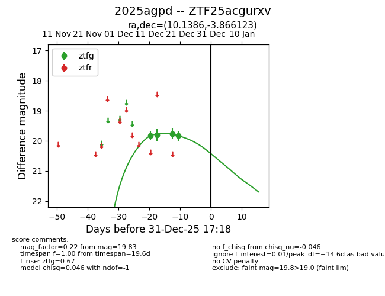
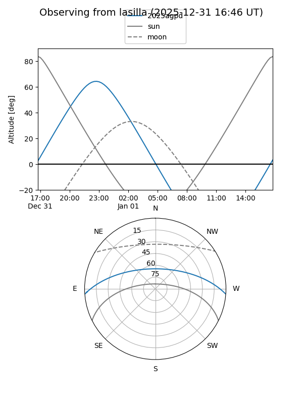
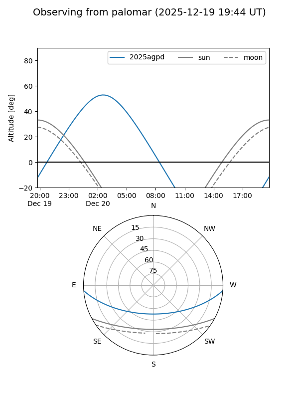
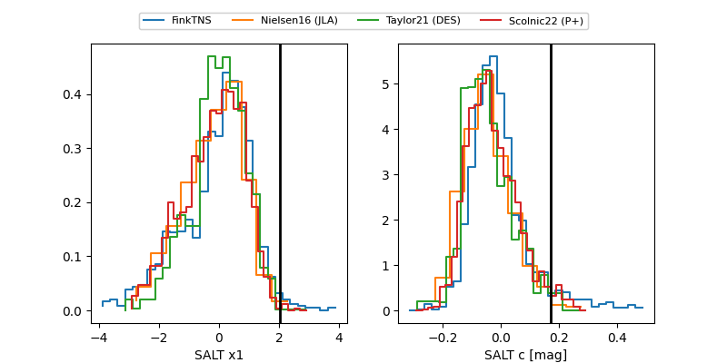

2025agpd
Target 2025agpd at 2025-12-21 02:38
Aliases and brokers:
FINK: fink-portal.org/ZTF25acgurxv
Lasair: lasair-ztf.lsst.ac.uk/objects/ZTF25acgurxv
ALeRCE: alerce.online/object/ZTF25acgurxv
TNS: wis-tns.org/object/2025agpd
YSE: ziggy.ucolick.org/yse/transient_detail/2025agpd
alt names
ZTF25acgurxv (ztf,fink_ztf)
2025agpd (tns,yse)
Coordinates:
equatorial (ra, dec) = 10.1386,-3.86612
equatorial (HMS+DMS) = 00:40:33.26,-03:51:58.04
galactic (l, b) = (116.0846,-66.59307)
Flags:
Photometry:
last ztfg=19.83
4 ztfg detections
Lightcurve

Visibility


Additional plots
